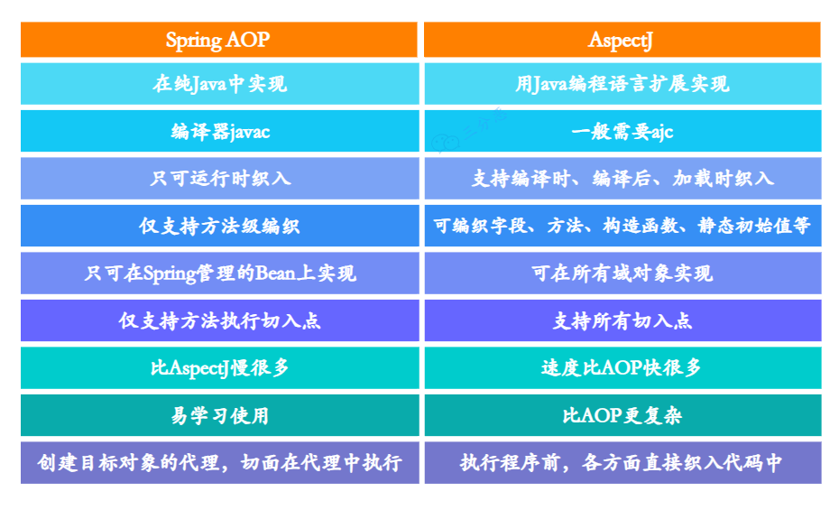
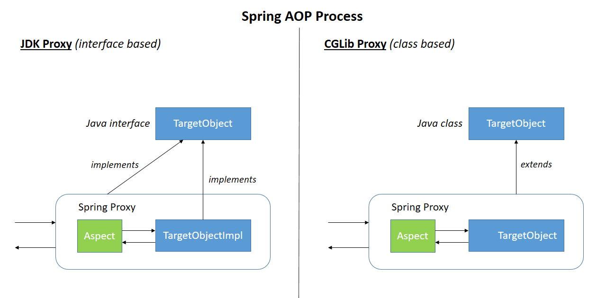

AOP
AOP: Aspect Oriented Programming，面向切面编程。
AOP Alliance
AOP 联盟是 java对于AOP提供的一系列标准接口，顶层接口有：
- Advice通知，及其继承接口MethodInterceptor方法拦截器；
- JointPoint连接点，及其继承接口MethodInvocation。
<dependency>
<groupId>aopalliance</groupId>
<artifactId>aopalliance</artifactId>
<version>1.0</version>
</dependency>
Java 依赖注入标准（JSR-330）
JSR-330 (Dependency Injection for Java) 该规范主要是面向依赖注入使用者，而对注入器实现、配置并未作详细要求。
- @Inject - Identifies injectable constructors, methods, and fields
- @Qualifier - Identifies qualifier annotations
- @Scope - Identifies scope annotations
- @Named - String-based qualifier
- @Singleton - Identifies a type that the injector only instantiates once
- Provider - Provides instances of T. Typically implemented by an injector
目前 Spring、Guice 已经开始兼容该规范，JSR-299（Contexts and Dependency Injection for Java EE platform，参考实现 Weld）在依赖注入上也使用该规范。
开源AOP实现
Hutools AOP
动态代理，无法针对
new出来的对象。
AOP模块主要针对JDK中动态代理进行封装，抽象动态代理为切面类Aspect，通过ProxyUtil代理工具类将切面对象与被代理对象融合，产生一个代理对象，从而可以针对每个方法执行前后做通用的功能。
提供 Aspect 接口，before、after 和 afterException接口，实现对类的方法进行拦截。
- 只能对单个类进行拦截；
- 对不同的方法的不同处理，需要自己写逻辑处理；
实现机制（按照优先级排序）
- 使用 Cglib 实现切面（无需定义接口即可对对象直接实现切面）
- 使用 Spring Cglib实现切面（因为 Cglib 不再维护）
- 使用 JDK 的动态代理实现切面（代理对象必须实现接口）
- 通过
Proxy.newProxyInstance创建的接口的子类
Guice AOP
实现 AOP Alliance 的接口，支持 JSR-330 依赖注入标准。
轻量级IoC（依赖注入框架）容器，类似Spring-AOP。Guice 通过代码的形式来注入并管理依赖。
- Guice：整个框架的门面
- Injector：一个依赖的管理上下文
- Binder：一个接口和实现的绑定
- Module：一组 Binder
- Provider：bean 的提供者
- Key：Binder 中对应一个 Provider
- Scope：Provider 的作用域
依赖注入(bind)
Guice官方推荐我们首选JSR-330标准的注解。
| JSR-330 javax.inject | Guice com.google.inject | |
|---|---|---|
| @Inject | @Inject | 在某些约束下可互换 |
| @Named | @Named | 可互换 |
| @Qualifier | @BindingAnnotation | |
| @Scope | @ScopeAnnotation | 可互换 |
| @Singleton | @Singleton | 可互换 |
| Provider | Provider | Guice的Provider继承了JSR-330的Provider |
AOP(binder)
通过对匹配的类/匹配的方法，执行切面函数
- 注意：切面依赖仍然走切面的话那么程序就陷入死循环
private static class MainModule extends AbstractModule {
@Override
protected void configure() {
// 默认不是单例模式，需要指定 in scope 或者在实现类上使用 @Singleton
bind(Animal.class).to(Cat.class).in(Scopes.SINGLETON);
// 绑定一个实例，永远是单例
// bind(Animal.class).toInstance(new Cat());
// 泛型绑定
// bind(new TypeLiteral<List<Animal>>(){}).toInstance(Arrays.asList(new Dog(),new Cat()));
// AOP, 对匹配的类/匹配的方法，执行切面函数
binder().bindInterceptor(Matchers.subclassesOf(Animal.class), Matchers.any(), new AopFunc());
}
}
AspectJ AOP
AspectJ 属于静态AOP框架，采用 ajc 编译器。
AspectJ 作为 Java 中流行的 AOP（aspect-oriented programming） 编程扩展框架，其内部使用的是 BCEL框架 来完成其功能。
- 在一些固定的切入点来进行操作；
- 匹配规则采用了类似正则表达式的规则；
- 对于运行中的java进行无法在不重启的条件下执行新增MOCK；
- MOCK功能代码嵌入到目标函数中，无法对MOCK功能代码进行卸载，可能带来稳定性风险。
AspectJ属于编译时增强，在运行前织入的，分为三类：
- 编译时织入：如类 A 使用 AspectJ 添加了一个属性，类 B 引用了它，这个场景就需要编译期的时候就进行织入，否则没法编译类 B；
- java源码 + aspectJ特殊语法的‘配置’ 文件 + aspectJ特殊的编译器
- 编译后织入：生成了 .class 后需要增强处理；
- 需要特殊的编译器
- 加载时织入：在加载类的时候进行织入，使用AspectJ agent

Spring AOP
springaop的源码中包含（复制）了 AOP Alliance 的接口定义；
spring aop 仅使用aspectJ 注解的一小部分（因此springboot aop starter 依赖 aspectjweaver）；
- spring aop 的实现有 JDK 和 cglib 两种动态代理的实现（默认采用 cglib）；
- spring aop 的 cglib 代理复制了 cglib 的实现，并定制，支持高版本的 JDK；
Spring AOP 基于动态代理来实现的，在容器启动时需要生成代理实例，在方法调用上也会增加栈的深度，使得 Spring AOP 的性能不如 AspectJ；
- Spring AOP无法代理new出来的对象，只能代理被spring容器管理的对象
